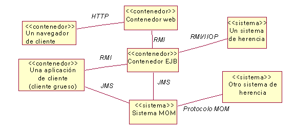
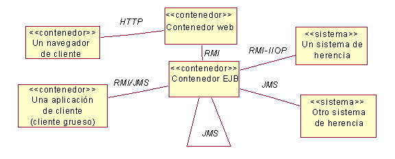

| Directriz: Descripción de la arquitectura de tiempo de ejecución de aplicaciones J2EE |
 |
|
| Elementos relacionados |
|---|
IntroducciónLa arquitectura de tiempo de ejecución de una aplicación se describe en la Vista de proceso, una vista arquitectónica que describe los elementos concurrentes de un sistema. Estas directrices proporcionan ayuda específica sobre cómo modelar la Vista de proceso de una aplicación J2EE. Consulte la sección Concepto: Vista de proceso para obtener más información. Cómo modelar la Vista de procesoLos componentes J2EE (consulte la sección Concepto: visión general de J2EE: componentes de J2EE) se despliegan en entornos denominados contenedores. Consulte la sección Concepto: visión general J2EE : contenedores de J2EE para obtener una descripción de cada uno de los tipos de contenedores que J2EE define. Cada contenedor es un elemento concurrente y, por lo tanto, debería aparecer en la Vista de proceso de la arquitectura. Otros elementos concurrentes importantes que aparecen normalmente en la vista de proceso de alto nivel son los sistemas externos. A continuación se muestra un diagrama típico de la vista de proceso de alto nivel de una aplicación J2EE.  En un ejemplo real, se vería también representado un middleware orientado a mensajes (MOM) de un proveedor específico, así como sistemas tradicionales y clientes de aplicación. Sin embargo, el contenedor web y el contenedor EJB son contenedores estándar que deberían aparecer en todas las vistas de proceso de J2EE. Hay que tener en cuenta que en este diagrama no se muestra la distribución física de estos sistemas en nodos de hardware específicos. Esto se muestra en el modelo de despliegue (consulte la sección Técnica: descripción de la distribución para las aplicaciones J2EE para obtener más información). En este ejemplo, se ven los mecanismos de comunicación entre procesos seleccionados y empleados entre los contenedores. J2EE proporciona mecanismos de comunicación entre procesos específicos. Son los siguientes:
Al definir la vista de proceso, una decisión importante es decidir cuándo utilizar JMS frente a RMI o RMI-IIOP. En este ejemplo, el cliente de aplicación, el contenedor EJB y otros sistemas tradicionales utilizan mensajería para comunicarse. Sin embargo, no está claro qué elementos se comunican con qué otros. Para resolver esta ambigüedad, considere eliminar el sistema MOM del diagrama, y mostrar a JMS como la asociación entre los elementos que se comunican mediante mensajería. Otra ambigüedad es saber si los EJB se comunican entre sí mediante mensajería. Esto se puede aclarar mostrando una asociación JMS del contenedor EJB consigo mismo. El diagrama final pasa a ser:  La vista de proceso, sin embargo, es algo más que tan sólo contenedores y sistemas de alto nivel. También trata sobre la concurrencia dentro de estos contenedores y sistemas. La vista de proceso debería identificar y modelar los siguientes tipos de clases activas.
Al utilizar JMS, se puede elegir relacionar directamente consumidores y productores de mensajes, o modelar la relación de forma más precisa modelando temas y colas.
Los diagramas de interacciones sirven para mostrar tanto la comunicación síncrona como la comunicación síncrona entre
elementos de diseño. También se pueden utilizar para analizar el comportamiento concurrente a efectos de problemas
lógicos y de rendimiento. En concreto, un arquitecto de software puede buscar dónde se producen mensajes frecuentes o
se dan elevados volúmenes de transferencia de datos en la red. Esto puede hacer que el arquitecto rediseñe interfaces,
o reasigne elementos de diseño entre hebras de control, entre servidores o entre cliente y servidor. Hay que observar que dentro de un contenedor EJB, es éste quien maneja las hebras y los procesos; los EJB no pueden crear o gestionar hebras. Por lo tanto, cada EJB se debería considerar como una clase activa, sin embargo, puesto que las llamadas a beans de sesión y beans de identidad son llamadas con bloqueo síncrono, normalmente no se modelan como clases activas. Normalmente, la vista de proceso de un contenedor EJB se limita a un mecanismo de concurrencia disponible: JMS con beans controlados por mensajes JMS. A pesar de que los beans de sesión y los beans de entidad generalmente no se modelan como clases activas, haya problemas de concurrencia, como cuando hay un EJB leyendo de la base de datos mientras otro escribe en ella. Estos problemas se tratan mediante la utilización de transacciones. La aproximación para utilizar transacción se debería documentar en las directrices específicas del proyecto. Asignación de elementos de diseño a clases activasLa sección Tarea: descripción de la arquitectura de tiempo de ejecución trata sobre la necesidad de asignar elementos de diseño a procesos y hebras. En una aplicación J2EE, todos los componentes web se asignan al contenedor web, y todos los EJB al contenedor EJB. Dada esta relación simple, no hay necesidad de modelar esta asignación. Sin embargo, si el diseño incluye procesos concurrentes adicionales (como por ejemplo dos aplicaciones de cliente distintas) puede ser útil especificar qué elementos de diseño se ejecutan en cada aplicación. Para las hebras de Java, los beans controlados por mensajes, las colas y temas JMS, los problemas están más en la forma en que se comunican, para evitar puntos muertos, datos no coherentes, etc. Estas situaciones se exploran mejor examinando guiones de uso realizados que incluyan estos elementos. Otras alternativas de modeladoDebido a la afinidad entre la Vista de proceso y la Vista de despliegue, a menudo se combinan los diagramas de alto nivel de estas vistas. Además, puesto que cada contenedor J2EE no es sólo un proceso, sino que también es un entorno de ejecución, se puede modelar como un "nodo lógico" en lugar de como una clase activa. |
© Copyright IBM Corp. 1987, 2006. Reservados todos los derechos. |